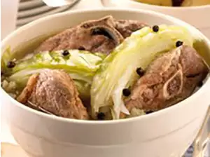

Fårikål

Description
Fårikål is a traditional lamb or mutton recipe from Southern Norway.
Lamb and cabbage are layered and stewed with peppercorns.
Serve with boiled potatoes that have been sprinkled with parsley.
Ingredients:
- 8 ounces sliced lamb meat
- 1 head cabbage, cored and sliced
- 2 cups water
- 1 ½ tablespoons whole black peppercorns
- salt to taste
- flour
Steps:
- Arrange a layer of sliced lamb in the bottom of a Dutch oven
or soup pot. Top with a layer of cabbage. Add the flour on
top of each layer of cabbage. Repeat layering as
many times as you can; season with salt to taste. Tie peppercorns
into a small piece of cheesecloth; place in center of casserole.
Pour water in and cover with a lid.
- Bring to a boil; simmer over low heat for 2 hours.
Remove peppercorns before serving.